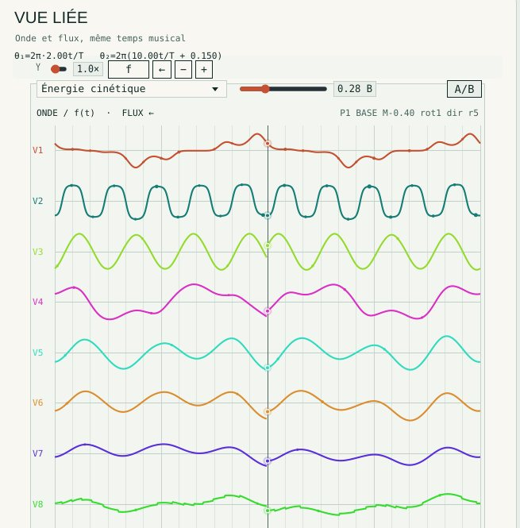
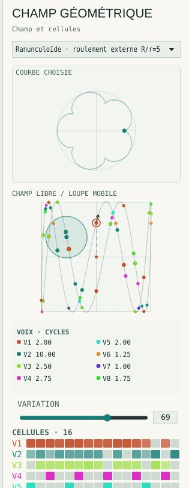
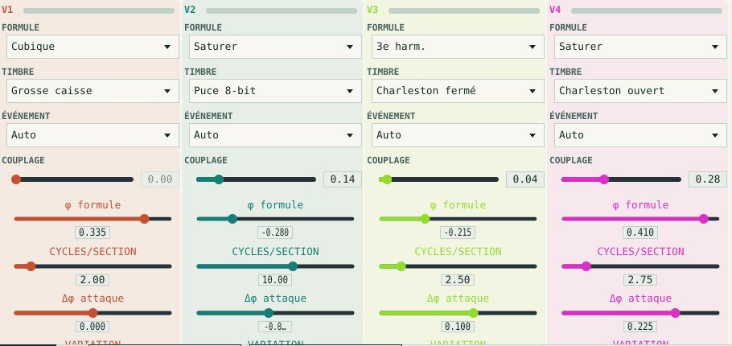
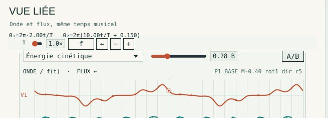

Chaque cadran représente une phase θᵢ(t) = 2π nᵢ t/T + φᵢ. n indique le nombre de tours dans la section T. La section compte 16 temps (quatre mesures en 4/4) et dure T = 960/BPM secondes. Un changement de tempo en lecture s'applique au début de la section suivante. Le point blanc montre l'état actuel ; les repères indiquent les attaques prévues. Dans le mixeur, φ formule décale la courbe qui calcule l'intensité des attaques de chaque voix ; leurs instants restent fixes.
Dans Étude · Cycle partagé, faites glisser une partie vide de l'anneau d'une voix pour avancer ou retarder tout le stem ; l'espacement entre les attaques reste le même. Faites glisser un point pour déplacer uniquement cette attaque. Cliquez sur un espace vide de l'anneau pour ajouter une attaque. Maintenez Maj en faisant glisser un point vers l'intérieur ou l'extérieur pour régler sa force. Clic droit ou double-clic sur un point pour supprimer l'attaque. Alt-clic sur l'anneau pour désactiver la cellule du stem.

2. Règles d'événement
Centre déclenche aux passages θ = 0 ou π. Extrema déclenche aux inversions θ = π/2 ou 3π/2. La règle change les instants d'attaque sans modifier l'oscillation dessinée.
3. Surface et géométrie
Le plan combine x = sin θ₁ et y = sin θ₂. Le champ libre garde chaque attaque, mais une loupe mobile pondère son intensité selon la distance. Quatre îlots pulsent et dérivent avec des phases propres et une légère influence du voisin ; des connecteurs temporaires ajoutent au champ d'attaques le corridor entre îlots proches ; deux microlignes dérivent et respirent de façon asymétrique. Chaque attaque est évaluée dans le champ actuel et peut sonner ou devenir un silence. Ce sont des agents compositionnels déterministes, pas une simulation cellulaire. Le parcours XY anime la relation entre les voix. La source géométrique fait piloter V1 par y(t) ; les courbes de Fourier n'agissent sur le son que si elles sont choisies comme source. Compas, polygones, spirale, Lissajous, courbes roulantes, cycloïde, chaînette et billard fournissent des parcours. L'aire et le périmètre sont informatifs ; le billard est un opérateur d'événements, pas une réverbération de salle.

4. Espace acoustique
La géométrie d'une salle modifie les trajets et les temps des réflexions. Un billard idéal suit un rayon : v′=v−2(v·n)n ; la longueur du trajet divisée par la vitesse du son approche le retard, et l'énergie peut diminuer à chaque paroi. Cette approximation convient mieux aux hautes fréquences lorsque la longueur d'onde est petite par rapport à la salle. Aux basses fréquences, les ondes interfèrent et forment des modes propres ; une réponse de salle doit inclure des modes ou une réponse impulsionnelle. Le billard actuel est un opérateur compositionnel d'événements, pas une réverbération acoustique. Aucun effet de salle n'est encore appliqué au son.
5. Son et modèle
La loi I propose huit fonctions : uniforme, projection y, produit xy, différence x²−y², gaussienne centrale, bandes cosinus, énergie potentielle U et énergie cinétique K. Pour U et K, x et y sont les déplacements normalisés de deux oscillateurs de même masse, avec des fréquences proportionnelles aux cycles par section : U=(n₁²x²+n₂²y²)/(n₁²+n₂²), K=1−U. C'est un modèle idéalisé, pas une mesure d'énergie acoustique. λ mélange la fonction avec l'intensité uniforme. Dans le mixeur, Décroissance raccourcit les queues modales et Fondamentale réduit le premier mode des timbres harmoniques. La matière sonore globale est le profil par défaut ; chaque canal peut l'hériter ou choisir une exception.
En MIDI de batterie, V1–V8 désignent des rôles internes, pas des numéros de piste : V1 grosse caisse (GM 35–36) ; V2 caisse claire, cercle et variantes (37–40) ; V3 charleston fermé/pédale (42/44) ; V4 charleston ouvert (46) ; V5 toms (41, 43, 45, 47, 48, 50) ; V6 cymbales (49, 51–53, 55, 57, 59) ; V7 percussions à main (60–66) ; V8 accessoires et autres notes. Dans le corpus GMD avec la carte TD-11, 22/26 sont des charlestons et 58 le cercle d'un tom. La graine choisit une famille sonore sans changer la carte des voix ; le masque commence en Champ libre. Pour étudier un beat, importez-le, isolez chaque stem dans le mixeur et repérez pulsation, guide et réponse avant de comparer les timbres. L'étiquette de style du fichier est une métadonnée, pas une preuve d'authenticité stylistique.

6. Zoom du graphique
Chaque voix a sa propre bande. Le bouton fléché alterne entre flux vers la gauche, vers la droite et ligne temporelle fixe. En flux, le temps joué reste au centre tandis que les courbes défilent. Utilisez + et − ou la molette pour zoomer jusqu'à une seconde. Glisser une section agrandie revient à la ligne fixe pour naviguer. Ce mouvement de la vue ne change pas le son. Dans le mixeur, Mouvement V2 déplace la phase de la deuxième voix par mesure et change ses attaques.

7. Scènes et versions
Enregistrer crée une version pour la session. Exporter la scène écrit un .batruc.txt ; Ouvrir la scène la restaure et l'ajoute à l'historique. REC choisit le dossier et enregistre le master stéréo en PCM 24 bits. Le bouton devient rouge et affiche STOP avec le temps écoulé ; la limite par défaut est de 5 min, réglable de 1 à 15 min dans le sélecteur voisin. STOP ferme le WAV et le TXT en arrière-plan. La réussite apparaît dans la zone d'état sans fenêtre modale ; les échecs d'écriture sont signalés. Si vous mettez le transport en pause, cet intervalle est enregistré en silence ; les passages de la forme générée ne sont jamais entièrement silencieux. Les fichiers existants ne sont jamais remplacés. L'historique conserve jusqu'à 16 versions dans cette session.
8. Comptes rythmiques
Avec n positions et deux états par position — silence ou attaque — il existe 2ⁿ motifs. Choisissez n pour voir chaque subdivision et parcourez les motifs par numéro ou en cliquant sur les cellules. Pour n=4, il y a 16 possibilités ; n=12 en compte 4 096. Une mesure 4/4 utilise 16 doubles-croches et en tire une parmi 65 536 combinaisons. L'explorateur et l'écoute ne modifient pas la composition. Pratiquer masque un motif à écouter puis à reconstruire. Parcours propose cinq défis : 4, 6, 8, 12 et 16 positions. Écoutez chaque motif, reconstruisez-le puis avancez après une réponse correcte. Les séquences pédagogiques avec des rythmes et contextes musicaux restent à développer.
Parcours d’écoute : importez un MIDI dont la source, la mesure et le BPM sont identifiés ; écoutez chaque stem et repérez les rôles de marquage, de guide et de réponse ; modifiez une couche puis comparez. Les étiquettes brésiliennes du GMD décrivent des interprétations de batterie, elles ne définissent pas les traditions. Pour le Maracatu Nação, comparez des sources contextualisées et ne considérez pas un baque comme universel.
Un temps divisé en triolet a n=3 et 2³=8 motifs. Une mesure à 3/4 avec des triolets sur chaque temps a n=9 et 2⁹=512. La règle reste 2ⁿ ; seul change le nombre total de positions.
Le préréglage de mesure joue le 4/4 en 16 doubles-croches ou le 3/4 avec triolets en 9 positions sur trois temps. Dans le sélecteur, n positions par temps restent un seul temps ; dans la mesure ternaire, 3 positions par temps se répètent sur trois temps.
9. Basse et mixeur
La ligne de basse générée part des attaques des voix et de la graine de composition. Le champ hexadécimal et Nouvelle basse définissent une graine propre : elle modifie le contour des hauteurs et les choix de phrase sans changer le MIDI source. Le niveau 0 conserve les ancrages ; les niveaux 1–3 ajoutent des contretemps sur des subdivisions libres lorsqu'une attaque proche sert de repère. Le mixeur possède une tranche BASSE dédiée : Activer la met en marche, le curseur règle son niveau, M la rend muette, S l'isole et Pan la place dans le champ stéréo. Les mêmes réglages figurent dans la page Basse. Modifier le piano-roll remplace la ligne générée ; Nouvelle basse revient à la génération.